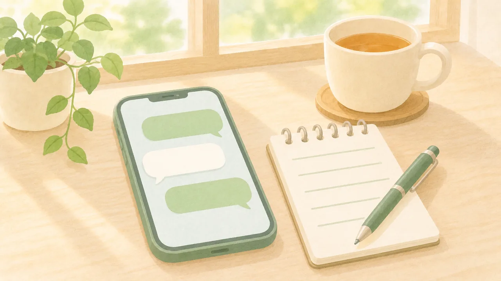
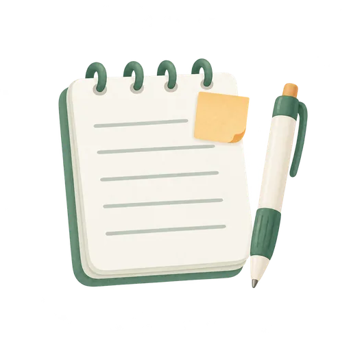

このブラウザでは、チェックを保存できません。バックアップの方法をご覧ください。
LINEの中で開いています。チェックを残すには、Safari・Chromeで開き直すのがおすすめです。
← 特典の一覧へ
そのまま使える文例とメモ
(受診・休む前)
〇〇のところを自分の言葉に変えて、そのまま使ってください。
■1 初診の予約の電話
仕事のストレスで、〇〇の症状が続いています。初診の予約をしたいです
平日に行けない時は
平日は仕事で行けないので、土曜か夜に初診の予約を取りたいです

■2 初診に持っていくメモ(5つ)緊張すると、その場で思い出せません。スマホのメモに書いて、診察で読み上げてください。
メモに書けた項目に、チェックを付けられます。
まもるの一言
僕の初診は、予約から2週間待ちました。待つ間にメモを書いておくと、当日あわてません。

■3 朝どうしても行けない日の、休む連絡おはようございます。体調不良のため、本日はお休みをいただきます。有給休暇での処理をお願いします。急ぎの〇〇は、△△さんにお願いしてあります
- 始業前に送る(会社の決まりが電話なら、電話で同じ内容を伝える)
- 理由は「体調不良」だけで足ります
■4 残業続きで限界の日に、定時で帰る一言
今週は残業が続いて体調が落ちているので、今日は定時で上がります。急ぎの〇〇は、明日の午前中に仕上げます
■5 上司に、相談の時間をもらう一言
体調のことで相談したいので、今週どこかで10分ほどお時間をいただけますか
■6 診断書を上司に渡す時の一言
医師から休養が必要と言われ、診断書をもらいました。今後の進め方を相談させてください
まもるの一言
僕は2回目の休職の時、診断書をもらった後の月曜日に、上司に渡して相談しました。
チェックは自動で保存されます。
バックアップ
※診断や、休職・復職の判断を示すものではありません。病気かどうか、休むべきか、戻れるかどうかは、医師と会社が判断します。
※制度や手続きは会社によって違います。自分の会社の決まりは、就業規則と人事で確認してください。